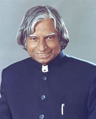

A.P.J. Abdul Kalam A.P.J. Abdul Kalam, (born Oct. 15, 1931, Rameswaram, India—died July 27, 2015, Shillong), Indian president (2002–07). After graduating from the Madras Institute of Technology, Kalam played a leading role in the development of India’s missile and nuclear weapons programs..

Abdul Kalam